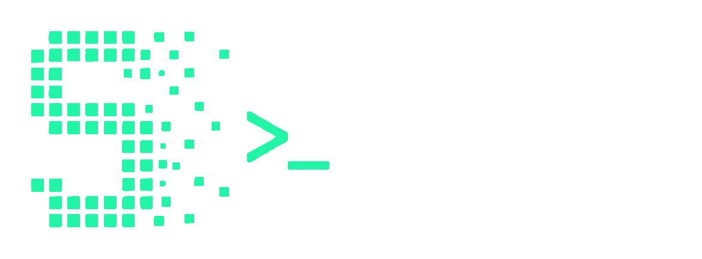

CLI-first
Pipes, alias, códigos de salida. Componible en Make, scripts y CI.
$ sift search "vector db" --top 3 --format json
▏ | jq '.[] | .repo' | xargs -I{} gh repo view {}

Sift descubre, evalúa y compara repositorios open source desde tu terminal. Busca por intención, ordena por señales reales, exporta a Markdown o JSON. Construido para humanos y para los agentes que orquestan.
Pipes, alias, códigos de salida. Componible en Make, scripts y CI.
Describe el problema. Sift expande la consulta con contexto, lenguaje, ecosistema e intención.
Cada puntuación se descompone en 5 señales ponderadas. Sin caja negra: sabés exactamente por qué un repo ganó.
Las búsquedas se quedan en tu máquina. La caché vive en ~/.cache/sift. Tu token nunca sale del entorno.
Diff lado a lado. Markdown para el README, JSON para los agentes.
Esquema JSON estable. Códigos de salida predecibles. Pensado para Hermes y n8n.
Pipeline transparente: consulta, candidatos, puntuación, selección, entrega. Cada paso es inspeccionable.
Describe lo que necesitas. Sift identifica ecosistema, lenguaje y objetivo.
Cinco señales con pesos fijos: relevancia (35%), actividad (25%), comunidad (20%), docs (10%), mantenimiento (10%).
Lee en la terminal. Pipea a un archivo. Abre el companion web local.
Cada repo recibe una puntuación de 0–100 basada en cinco dimensiones con pesos fijos. La relevancia actúa como gate: si no resuelve tu problema, no entra al top sin importar cuántas estrellas tenga.
Gate de relevancia: un repo con 50k estrellas pero irrelevante para tu búsqueda nunca desplaza a uno específico pero más pequeño. La fórmula raw × (0.65 + 0.35 × rel) asegura que la relevancia pese al menos 65% del total.
El CLI es el producto. La UI web es un inspector local para comparar, revisar el historial y exportar. Lo abres solo cuando hace falta.
Esquema JSON estable, códigos de salida predecibles, Markdown estructurado. Mete a Sift en cualquier pipeline.
Envía resultados de Sift a flujos de agentes locales. Stream de stdout, parseo JSON.
Dispara automatizaciones desde búsquedas de repos vía el nodo webhook de Sift.
Inserta tablas ordenadas directo en READMEs y ADRs. Refrescables a demanda.
Esquema versionado dentro del binario. Seguro para scripts, agentes y pipelines.
Pipea, compone, aliasea. Códigos de salida predecibles para gates de CI.
API de plugins en v0.5. Trae tu propio scorer.
El output de Sift se lee como docs que tú mismo escribirías, solo que refrescables con un comando.
$ pipx install sift
$ sift search "vector db con embeddings" --lang python --top 5 $ sift compare chroma weaviate qdrant $ sift export --format json > repos.json
consulta → candidatos → motor de scoring → top·N → md / json / web
Sift corre en tu máquina. Sin cuenta, sin tracking, sin estado remoto. Puedes auditar y borrar cada byte.
Sin daemon en background. Se lanza por comando.
Sin registro, sin SSO, sin perfil.
Stats anónimas opt-in, apagadas por defecto.
SQLite en ~/.cache/sift. Borra cuando quieras.
$GITHUB_TOKEN vive en el entorno. Nunca se persiste.
Bind a loopback. Apagado por defecto.
Un comando te separa de una shortlist que vale la pena enviar.